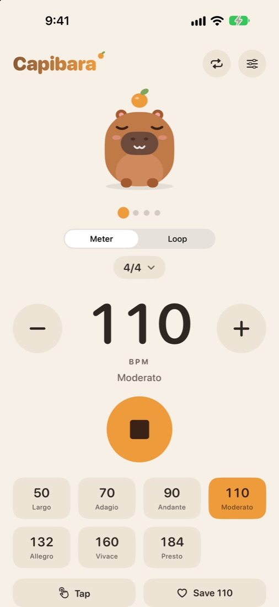
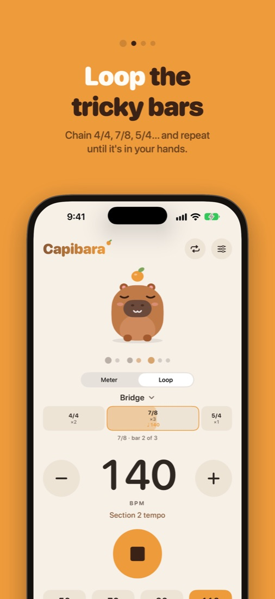
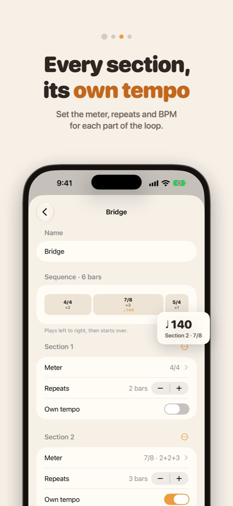
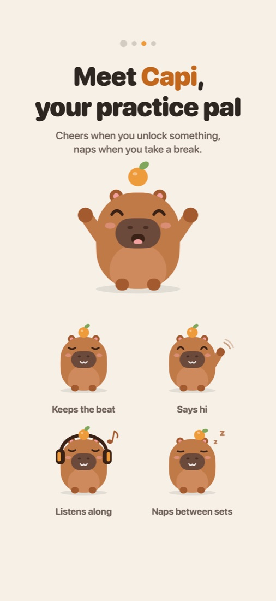

Keep time
with Capi
A calm, precise metronome for the passages where the meter keeps changing. Set up 4/4, 7/8 and 5/4 once, give each section its own tempo, and loop it until it's in your hands.

Rehearsal loops
Chain different bars, like 2×4/4 → 3×7/8 → 1×5/4, and they repeat until you stop.
Odd meters, properly
Group 7/8 as 2+2+3 or 3+4, count by groups, and hear accents where the music puts them.
A tempo for each section
The bridge can sit at 140 while the verse stays at 110. The big number always shows what you hear.
Subdivisions
Soft clicks between beats in 2, 3 or 4, so you can feel the eighths, triplets or sixteenths.
Outside the app
Lock Screen controls, widgets, a menu bar metronome on Mac, and taps on your wrist with Apple Watch.
One purchase
The metronome is free. Capibara Pro is a one-time purchase, no subscription, with a 7-day free trial.


